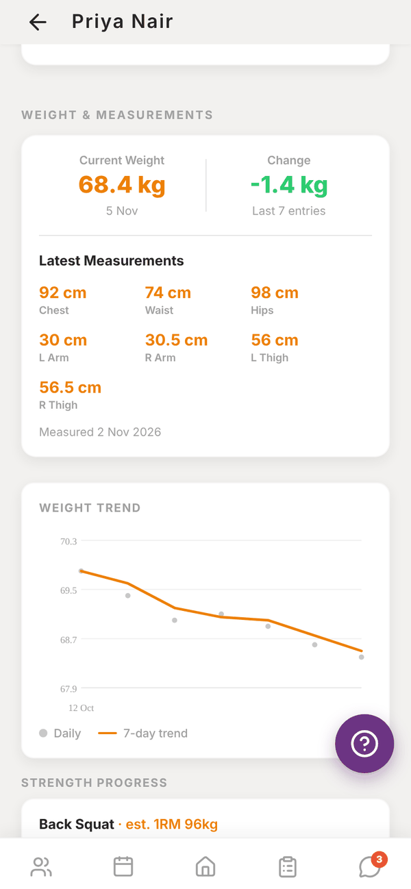
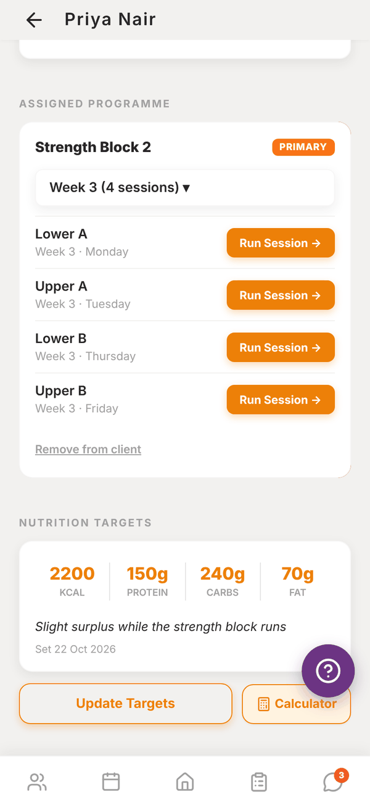
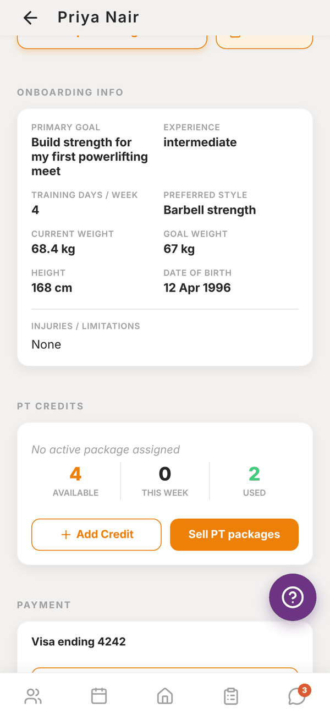
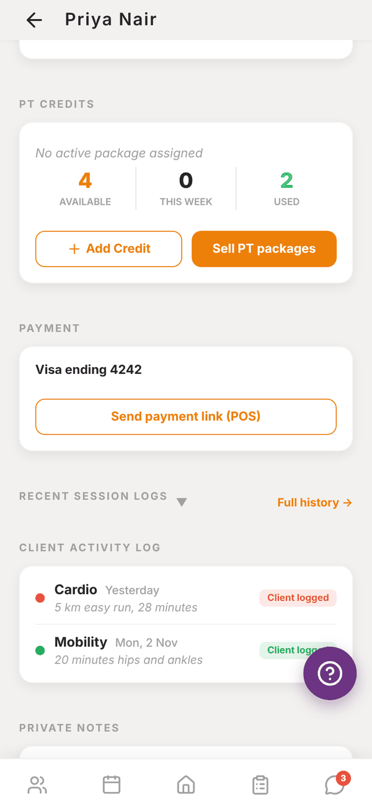
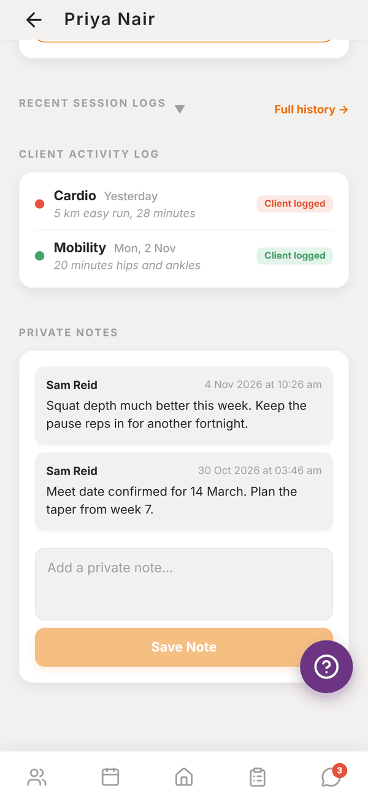

Totality for trainers
The client profile
Every section of a client's page, from recent nutrition and weight to programmes, credits, payments and private notes.
Tap a client anywhere in the app to open their profile. It's one long page, top to bottom, with everything you need to coach them. Here is every section in order.

Gone quiet (only when it applies)#
If the client hasn't been active in the app for 14 days or more, a card at the top says "Zack has gone quiet" with when they were last active. Draft a nudge with Tali writes a friendly message in your voice for you to edit and send. See Waiting on you.
Recent nutrition#
The last 7 days of food, newest first. Each day shows calories against their target with a progress bar and their protein, carbs and fat. Tap a day to expand it and see every meal and food. See Client nutrition.
Weight and measurements#
- Current Weight and Change across their last entries.
- Latest Measurements: chest, waist, hips, arms and thighs, with the date measured.
- Weight trend: a graph of their daily weigh-ins and a 7 day trend line.
- Strength progress: estimated one rep max over time for their main lifts.


Progress photos#
Shows the client's recent progress photos when they've uploaded any.
Assigned programme#
Every programme assigned to the client. The main one is marked PRIMARY. If they have more than one, tap Set as Primary on another to make it the main one.
- Tap the week picker (for example Week 3 (4 sessions) ▾) to choose a week.
- Each session has Run Session → to start a live session with the client. See Running a session.
- Remove from client takes the programme off their profile. Their logged history stays.
No programme yet? Tap Go to Programmes and assign one. See Assigning a programme.
Nutrition targets#
Their daily calories, protein, carbs and fat, any note, and the date you set them. Set Targets or Update Targets opens the form, and Calculator works the numbers out for you. See Client nutrition.
Onboarding info#
The client's answers from their first login: primary goal, experience, training days a week, preferred style, current and goal weight, height, date of birth, whether they're pregnant or breastfeeding, and injuries or limitations. Until they finish it, this says "Client will complete the questionnaire on first login".


PT credits#
How many session credits the client has: Available, This week and Used. If they're on a weekly PT package, its name and credits per week show at the top.
- Add Credit adds one credit by hand.
- Generate this week creates this week's credits from their package (only when they have a package).
- Sell PT packages (independent trainers) opens My Products so clients can buy credits.
See Credits and settling sessions.
Payment#
POS Shows only when you can take payments: independent trainers with the POS add-on, or gym trainers when the gym has POS.
- The card on file, for example "Visa ending 4242", or "No payment method on file".
- Request Payment Method sends the client a notification to add a card.
- Add Card Manually lets you enter their card with them.
- Send payment link (POS) opens POS with this client already picked. See Payment links.
Recent session logs#
Tap the heading to expand the client's latest logged sets. Full history → opens every session they've done. See Session history.
Client activity log#
Activities the client logged themselves, like a run or a mobility session, marked Client logged.
Private notes#
Notes for you, never shown to the client. Type in Add a private note... and tap Save Note. Each note shows who wrote it and when.

Questions#
Can the client see my private notes?
No. Private notes never show in the client's app.
How do I message this client from their profile?
Open the Messages tab and tap their name. See Messaging.
Their weight shows 0 kg.
They haven't logged a weight yet. Weight comes from the weigh-ins the client logs in their app.
Why can't I see the Payment section?
It only shows when POS is on: the POS add-on for independent trainers, or the gym's POS for gym trainers.